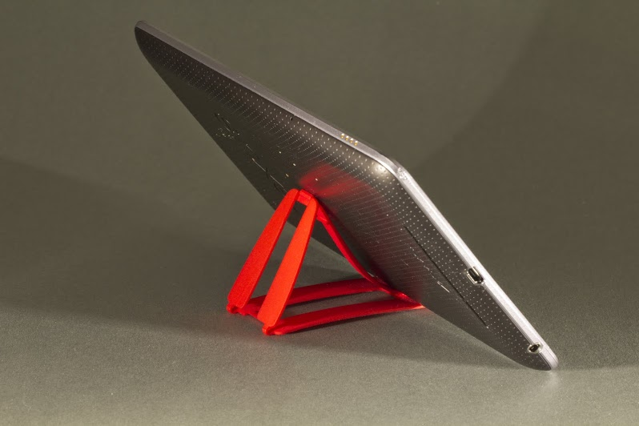
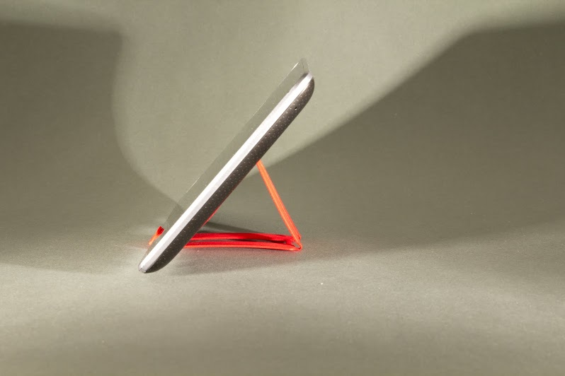

Mr. Foot
En fot - som passar i plånboken.
Ett ställ i tiden.
Trenden att med alla skärmar vi i vår vardag använder, gör att vi allt oftare handskas med allt större skärmar. Alla vet hur de tär att hålla en durfplatta i handen, i tio minuter vid film-tittande eller läsning.
Detta kan enkelt lösas med ett tillbehör, som inte bara löser problemet, utan även är så smidigt att det alltid kommer finnas vid din sida, i din plånbok.
Alltid hjälpsam. Alltid vid din sida.
Den avancerade konstruktionen, framtagen i 3d-printer, gör att Mr. Foot mycket enkelt kan fällas ihop till storleken av ett kreditkort, och förvaras i din plånbok.

Multifunkis - Passar olika typer av enheter
Mr. Foot är byggd så att han både ska kunna stödja mobilfelefoner och surfplattor - oberoende av enhetens märke eller storlek.